Box/Box-Percentile Plot with additional vertical stripchart, mean(s), and trend-lines.
This function produces boxplots as function boxplot and box-percentile plots as function bpplot (package Hmisc),
offering a formula interface, data specification via a vector of variable names, as numeric matrix where all columns will be interpreted as
variables or by specifying one or multiple numeric vectors (see examples below). It additionally/optionally
adds vertical jitterplots to each boxplot, adds the number of observations, adds mean-values, and allows to add a trend-line connecting either
mean-values (trend="mean") or median-values (trend="median"). Furthermore, this function filters for groups with less than 'threshold'
observations. For these (sub-)groups no boxplots will be drawn but a jitterplot will be produced. Labels for each group (X-axis labels) can be customized via
'xlab.srt', 'xlab.cex', 'xlab.col', 'xlab.font'. Note: When using the formula-interface, one cannot specify formulas as in function 'boxplot'
i.e. using something like 'a + b' to get factor crossing, one has to use the correct formula instead as used in e.g. 'lm', i.e. 'a:b'.
BoxPlot(..., obj, form = NULL, var = NULL, box.type = "b", horizontal = FALSE, col = "white", sc.col = "#00000040", sc.pch = 15L, sc.cex = 1, sc.jitter = 0.1, Xaxis = list(side = 1, mgp = c(3, 0.5, 0), font = 1, tick = TRUE), Xaxis2 = list(side = 3, font = 2, mgp = c(3, 0.5, 0), tick = TRUE), XaxisTab = NULL, Yaxis = list(side = 2, mgp = c(3, 1, 0)), Ylabel = list(text = "", side = 2, line = 2.5, font = 1, cex = 1), Xlabel = list(text = "", side = 1, line = 2.5, font = 1, cex = 1), Title = list(line = 2.5), Grid = NULL, transf = NULL, trend = NULL, trend.lty = 1L, trend.lwd = 1, trend.col = "blue", threshold = 5L, border = "black", mean.pch = 3L, mean.cex = 1.5, mean.col = "salmon", mean.lwd = 2L, vline = NULL, vl.lwd = 1L, vl.lty = 1L, vl.col = "black", Box = TRUE)
Arguments
| ... | a numeric matrix, multiple numeric vectors or a (possibly named) list with multiple numeric vectors to be plotted and additional graphical parameters (identified by names) to be passed on. |
|---|---|
| obj | (data.frame, matrix) corresponding to the dataset to be used. |
| form | (formula) such as 'y~grp', where 'y' is a numeric vector of data values to be split into groups according to the grouping variable 'grp'. |
| var | (character) vector specifying the columns in 'obj' to be used for plotting. The order of elements is retained in the boxplot. |
| box.type | (character) "b" = for regular boxes, "bp" = for box-percentile boxes
(see ? bpplot of package |
| horizontal | (logical) TRUE = the boxes are drawn horizontally, FALSE = vertical boxplot. Note, this has no effect when box.type="bp", since
the underlying function |
| col | (character) string(s) specifying colors to be used to color the bodies of the box plots. By default they are in the background color. |
| sc.col | (character) string or vector of strings specifying color(s) of plotting symbols in the stripchart. By default "black" with 80% transparency (alpha=.2). In case of a vector of strings, it is best practise to provide as many elements as there are elements in 'obj', which can be used to highlight an additional grouping factor within a single box. Note, it is the responsibility of the user to provide 'sc.col', 'sc.pch' or 'sc.cex' in such a way, that the graphical output is meaningful. In case of providing less than 'nrow(obj)' elements, 'sc.col' will be replicated to the required length. |
| sc.pch | (integer) value or vector of integers specifying plotting smybols for the stripchart. The same rules as for 'sc.col' and 'sc.cex' apply here. |
| sc.cex | (numeric) value or vector of numeric values specifying the magnification of plotting symbols in the stripchart. The same rules as for 'sc.col' and 'sc.cex' apply here. |
| sc.jitter | (numeric) specifying the amount of jittering in the stripchart. |
| Xaxis | (list) passed to function 'axis' which allows to fully specify the X-axis labelling (see ?axis). Default is to determine group labels automatically and plotting group labels below the plot. Set to NULL for omitting group labels. For custom group-labels use the list-element "labels". The order of these labels must correspond to the order of group-levels in case the formula interface was used, i.e. check the order of sort(unique(obj$grp)). To obtain your desired ordering, specify classification variables as factor-objects using 'factor(dat$trt, levels=c("Level_1", "Level_2", ..., "Level_n"))' where "trt" is the classification variable and Level_1 to Level_n represents your desired order of factor levels (which is used in the plot). |
| Xaxis2 | (list) passed to function 'axis' which allows to fully specify the X-axis labelling above the plot (see ?axis). This is used to specify the number of observations per sub-group according to the group-labels. Default is to plot these numbers above the plot. To omit set to NULL. Note, if 'horizontal=TRUE' this axis-labelling will appear in the right margin and labels will be oriented perpendicular to the axis. Set 'Xaxis2=list(las=0)' to overwrite the default for usual parallel orientation. |
| XaxisTab | (list) or NULL, if a (possibly empty) list AND 'form' is specified, 'Xaxis' will be set to NULL and a table will be used a X-axis label
representing the combination of factor-levels for all factors appearing in 'form' (see examples and see |
| Yaxis | (list) passed to function 'axis' which allows to fully specify the the appearence of the Y-axis (see ?axis). |
| Ylabel | (list) passed to function 'mtext' which can be used to fully specify the Y-axis label. |
| Xlabel | (list) passed to function 'mtext' which can be used to fully specify the X-axis label or even group labels (see examples). |
| Title | (list) passed to function 'title'. |
| Grid | (list) passed to function 'grid'. Set to NULL to omit (default). For adding a grid simply set 'Grid=TRUE' which applies default settings for the added grid or fully specify the grid to be added by specifying each argument (see ?addGrid for details). |
| transf | (function) name of a function to be used to tranform data before plotting, e.g. log, log10 or user-defined functions, i.e. func=function(x)x[x==0]<-min(x, na.rm=TRUE)/2 and setting 'transf=func'. |
| trend | (character) "mean" = mean values are connected by a line emphasizing the dynamics (especially for time course data) "median" = median values are used, set to NULL to omit. |
| trend.lty | (integer) line type of the trend line. |
| trend.lwd | (numeric) line width of the trend line. |
| trend.col | (character) color of the trend line. |
| threshold | (integer) minimum number of points required for plotting a boxplot, otherwise only the stripchart will be plotted. |
| border | (character) string specifying the border color(s) of boxes. This can be a vector with different colors for multiple boxes. |
| mean.pch | (integer) plotting symbol for mean-values, which are added to the plot. Use '-1' to prevent plotting of mean-values. |
| mean.cex | (numeric) specifying the magnification of mean-value plotting symbols. |
| mean.col | (character) specifying the color of mean-value plotting symbols. |
| mean.lwd | (integer) specifying the line width of mean-value plotting symbols (cross, plus, asterisk etc.). |
| vline | (numeric) value(s) specifying vertical lines added to the plot. |
| vl.lwd | (integer) line width of vertical lines. |
| vl.lty | (integer) line type of vertical lines. |
| vl.col | (character) color of vertical lines. |
| Box | (logical) TRUE = a box is plotted surrounding the plot, FALSE = no box. |
Examples
data(input) ## specify variables to plot BoxPlot(input, KRAS.exprs~Arm, transf = log)#>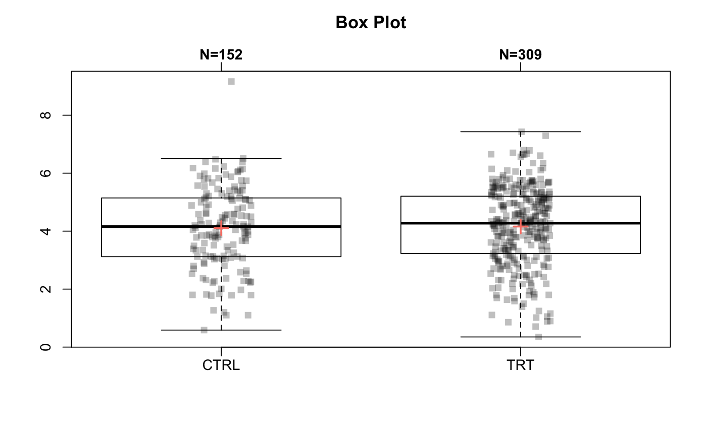## same plot, now horizontally plotted BoxPlot(input, KRAS.exprs~Arm, transf = log, horizontal=TRUE, Xaxis=list(las=2, hadj=2), Xaxis2=list(las=2, hadj=-.25))#>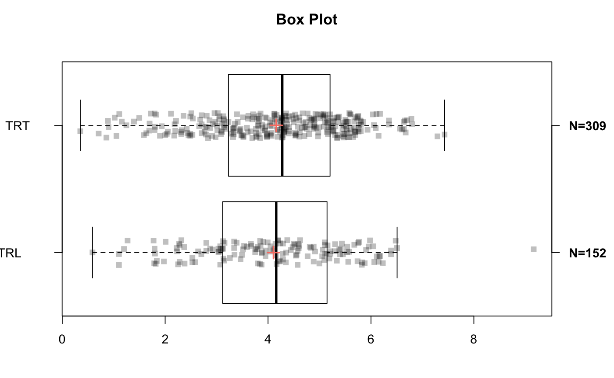## now as box-percentile plot BoxPlot(input, KRAS.exprs~Arm, transf = log, box.type="bp")#>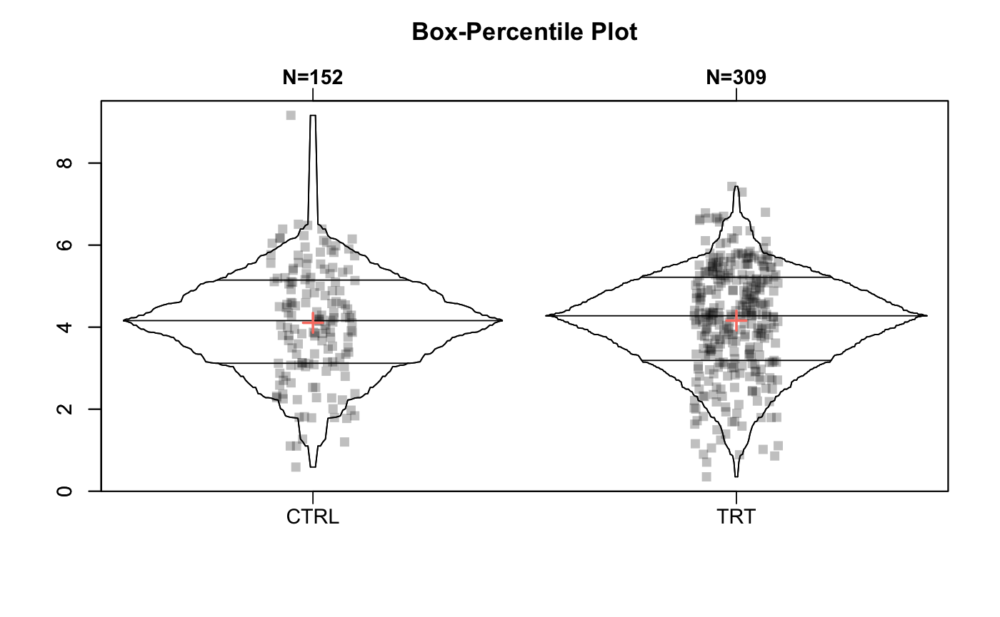## with custom main title BoxPlot(input, KRAS.exprs~Response, transf = log, box.type="bp", Title=list(main="Custom Main Title"))#>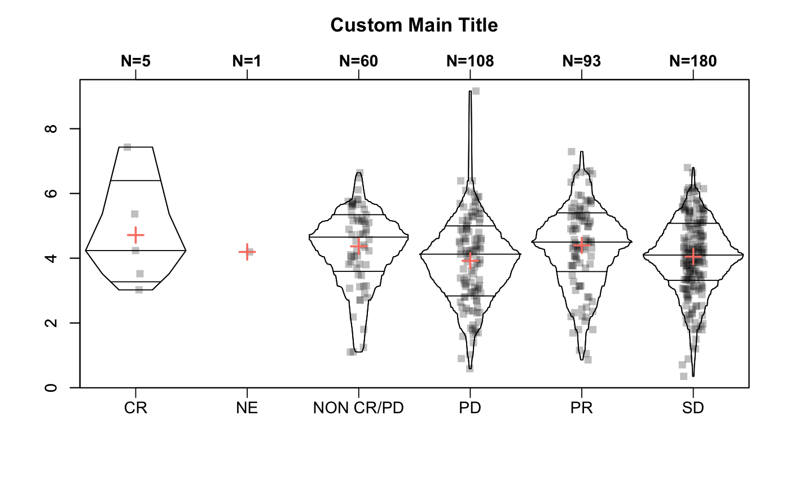## the same plot with trend line (connects either means or medians) BoxPlot(input, KRAS.exprs~Response, transf = log, trend="median")#>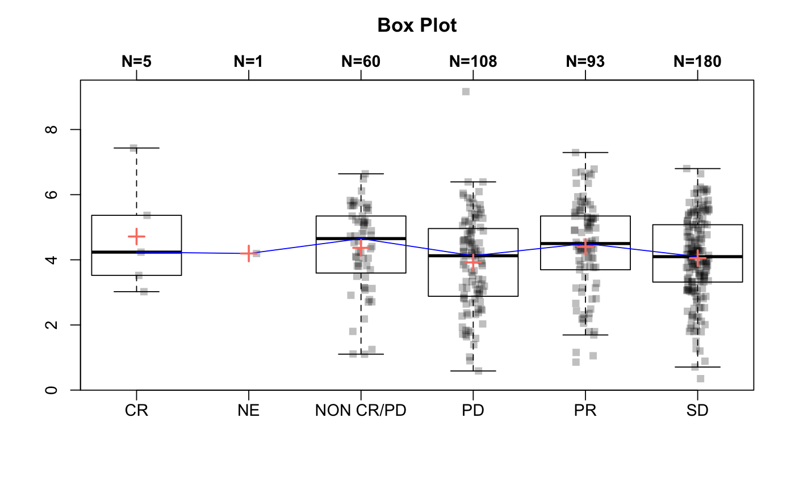## use an addition grouping variable to color points in the stripchart BoxPlot(input, KRAS.exprs~Response, transf = log, trend="median", sc.col=c("red", "blue", "green")[input$Country] )#>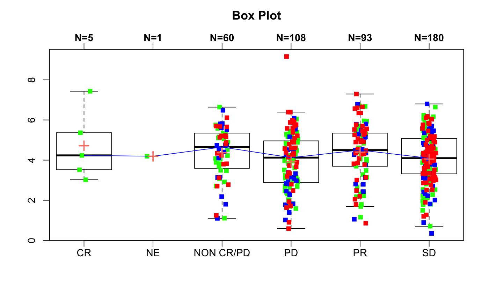## use yet another grouping factor for plotting symbols in the stripchart BoxPlot(input, KRAS.exprs~Response, transf = log, trend="median", sc.col=c("red", "blue", "green")[input$Country], sc.pch=c(5,10)[input$Arm])#>legend("bottomleft", fill=c("red", "blue", "green", "white", "white"), legend=c("Other", "USA", "W Europe", "CTRL", "TRT"), pch=c(-1, -1, -1, 5, 10), border=NA)## boxplot with trend lines (mean) and grid added to the plot BoxPlot(input, KRAS.exprs~Arm, transf = log, Grid=TRUE, trend="mean")#>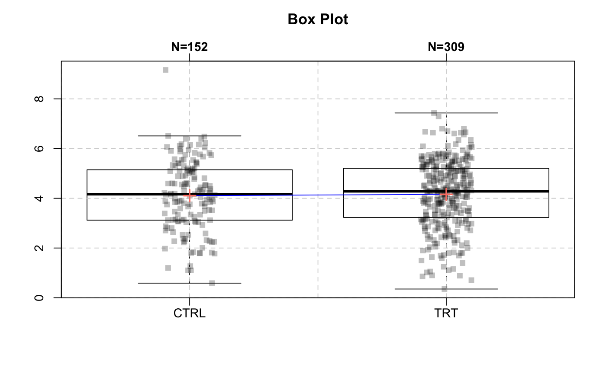## changing plotting symbol for mean-values BoxPlot(input, KRAS.exprs~Arm, transf = log, Grid=TRUE, trend="mean", mean.pch=2)#>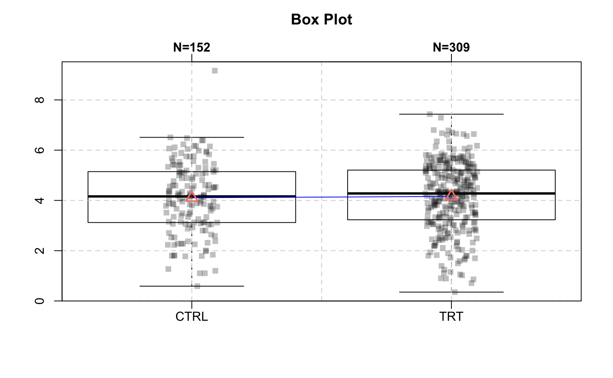## specifying the magnification of mean-value plotting symbols BoxPlot(input, KRAS.exprs~Arm, transf = log, Grid=TRUE, trend="mean", mean.pch=2, mean.cex=2.5)#>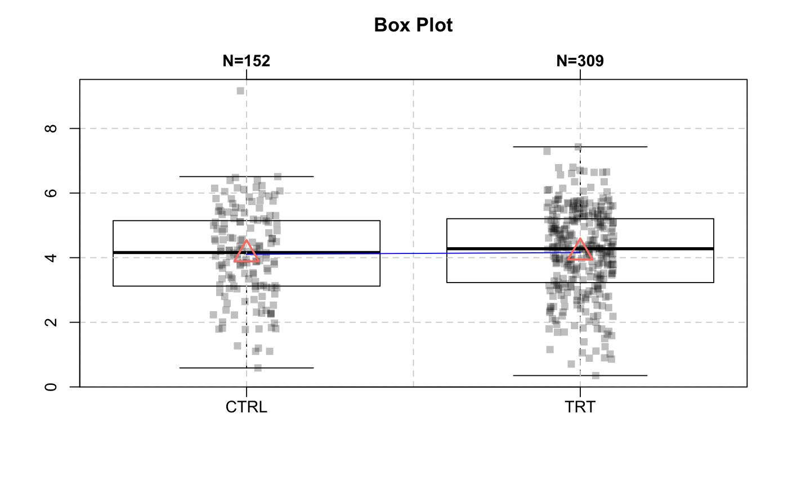## specifying the color of mean-value plotting symbols BoxPlot(input, KRAS.exprs~Arm, transf = log, Grid=TRUE, trend="mean", mean.pch=2, mean.cex=2.5, mean.col="blue")#>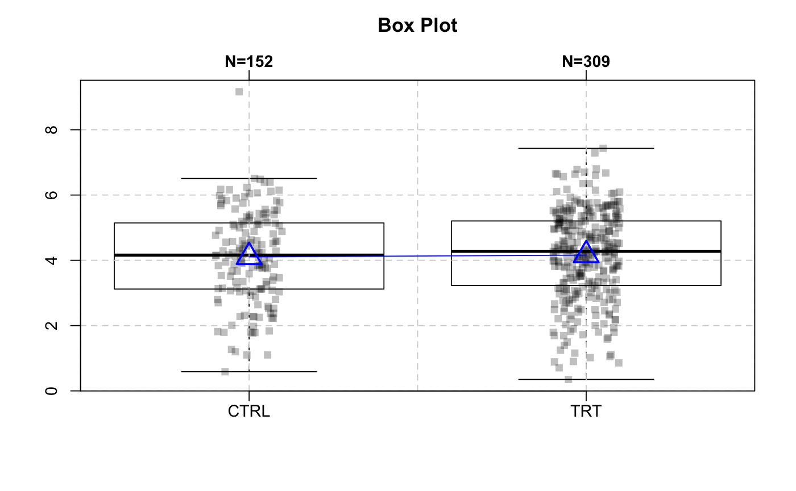## specifying the line width of mean-value plotting symbols BoxPlot(input, KRAS.exprs~Arm, transf = log, Grid=TRUE, trend="mean", mean.pch=2, mean.cex=2.5, mean.col="blue", mean.lwd=4)#>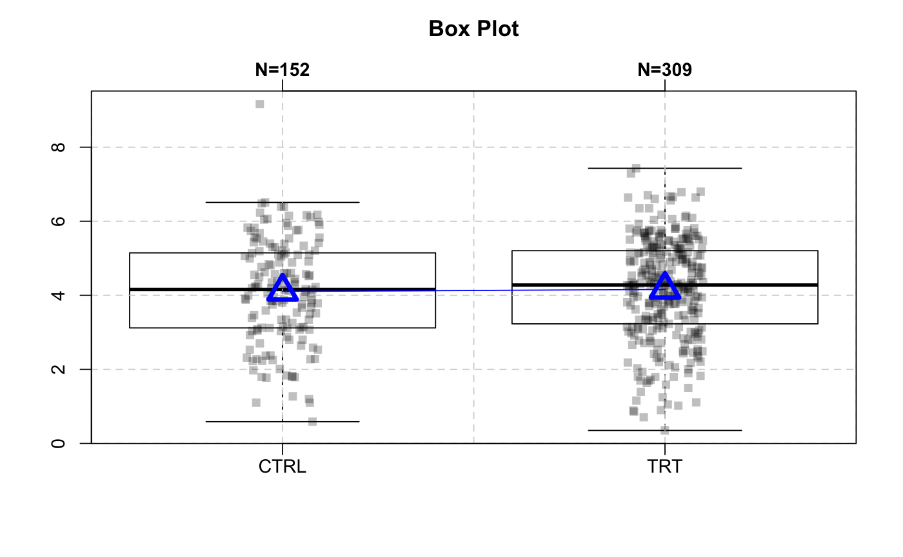## now as box-percentile plot BoxPlot(input, KRAS.exprs~Arm, transf = log, box.type="bp", Grid=TRUE)#>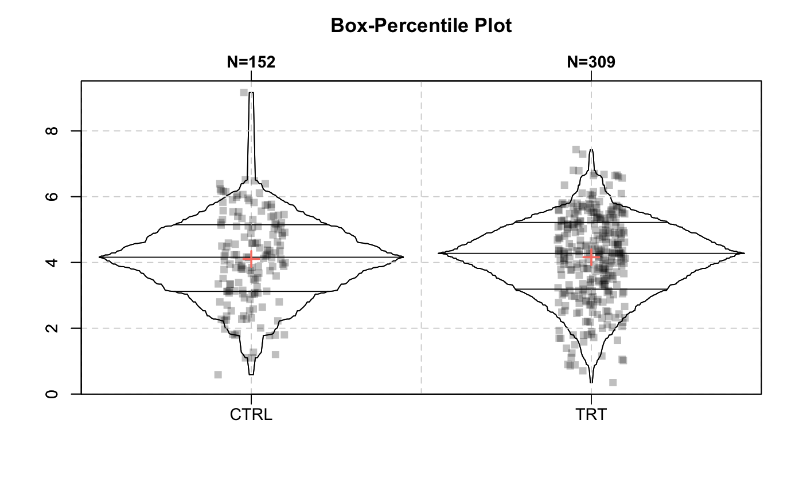## change y-label and connect the means using specific color BoxPlot(input, KRAS.exprs~Arm, transf = log, trend="mean", trend.col="red", Ylabel=list(text="Example Measurements"))#>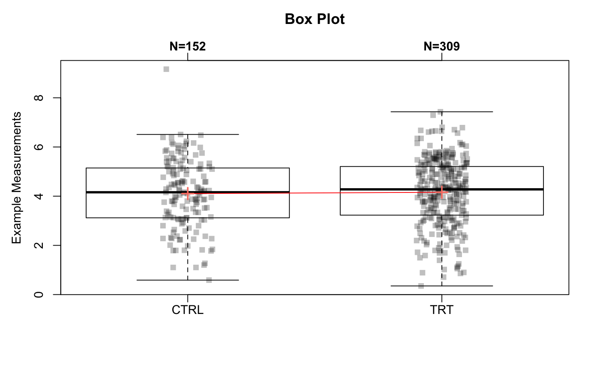## multiple grouping factors can be specified via the formula interface BoxPlot(input, KRAS.exprs~Arm:Sex, transf = log)#>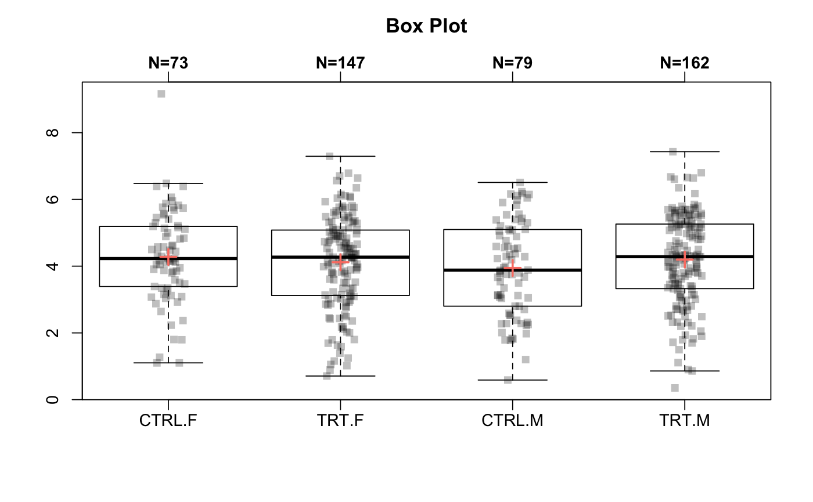## now 'Arm' is explicitly nested within 'Sex' which changes the ordering of ## combined grouping factors (which is identical to using formula 'KRAS.exprs~Arm:Sex'). BoxPlot(input, KRAS.exprs~Arm %in% Sex, transf = log)#>## more meaningful group-labels are best specified using custom factor-level names ## (increase width of the plot window) inp <- input inp$Sex <- factor(inp$Sex, levels=c("F", "M"), labels=c("Female", "Male")) BoxPlot(inp, KRAS.exprs~Arm %in% Sex, transf = log)#>## alternatively one can use the 'Xaxis' argument, but the ordering of these labels is not checked ## which is not important for automatically generated group-labels as shown in the previous example BoxPlot(input, KRAS.exprs~Arm %in% Sex, transf = log, Xaxis=list(labels=paste(rep(c("CTRL", "TRT"), 2), c(rep("Female", 2), rep("Male", 2)), sep=".")))#>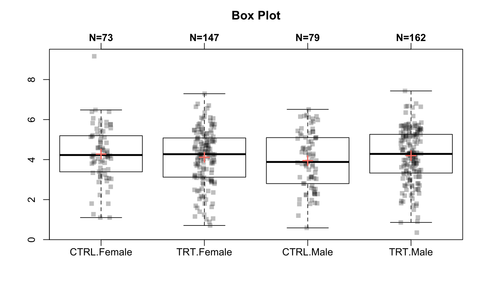## one can use a table as Xaxis label representing the factor-level ## combination defining sub-classes BoxPlot(inp, KRAS.exprs~Arm:Sex, XaxisTab=list(), mar=c(8,3,5,1), transf = log)#>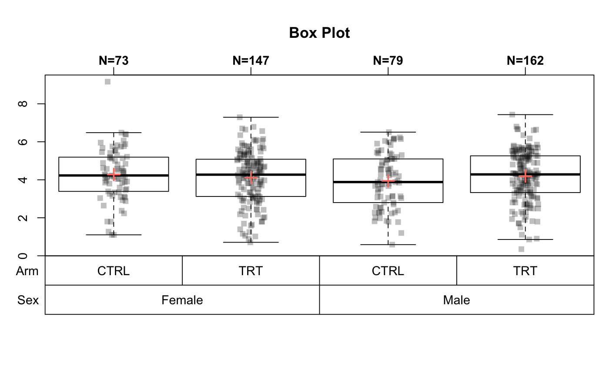## using smaller bottom margin will result in smaller table height BoxPlot(inp, KRAS.exprs~Arm:Sex, XaxisTab=list(font=2, col="darkblue", cex=1.25), mar=c(5,3,5,1), transf = log)#>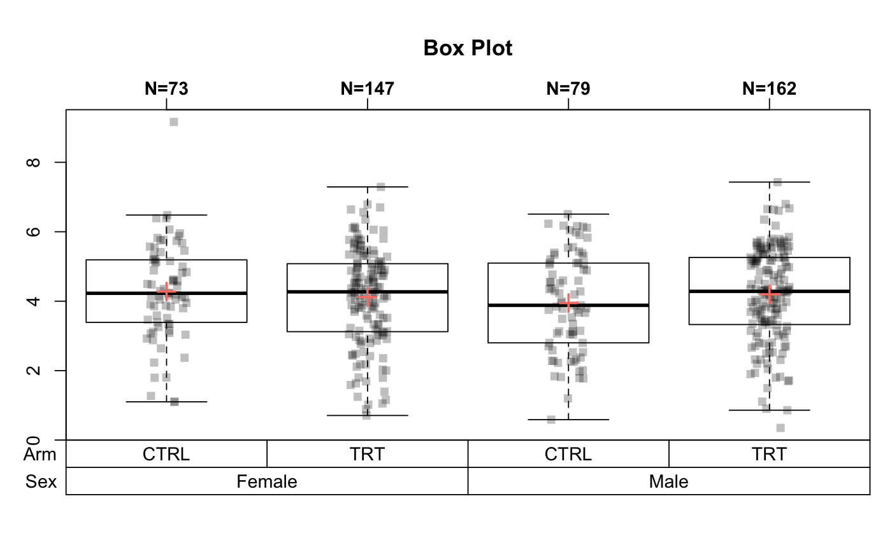## with the original factor levels and as horizontal plot BoxPlot(inp, KRAS.exprs~Arm:Sex, XaxisTab=list(), mar=c(5,8,5,4), transf = log, horizontal=TRUE, Ylabel=list(text="Y-axis label now appearing on X-axis"))#>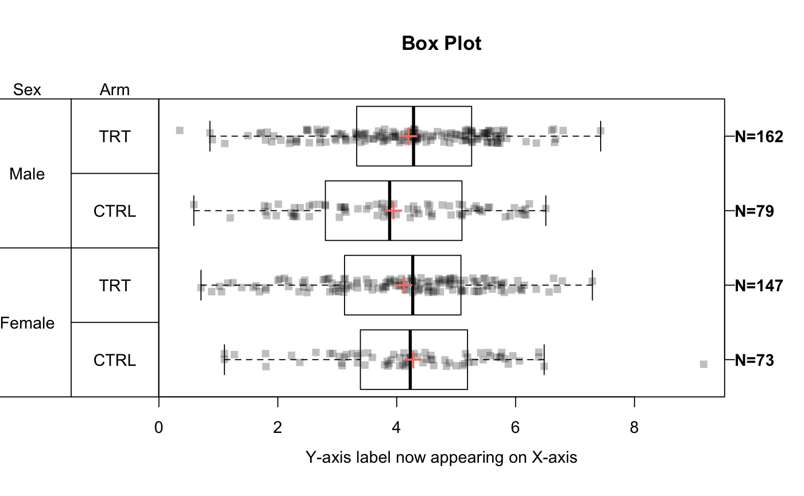## one can use different font-settings for rownames and cells of the table BoxPlot(inp, KRAS.exprs~Arm:Sex, XaxisTab=list(Label=list(font=2, col="darkblue", cex=1.25), Text=list(col="red"), mar=c(5,3,5,1)), transf = log)#>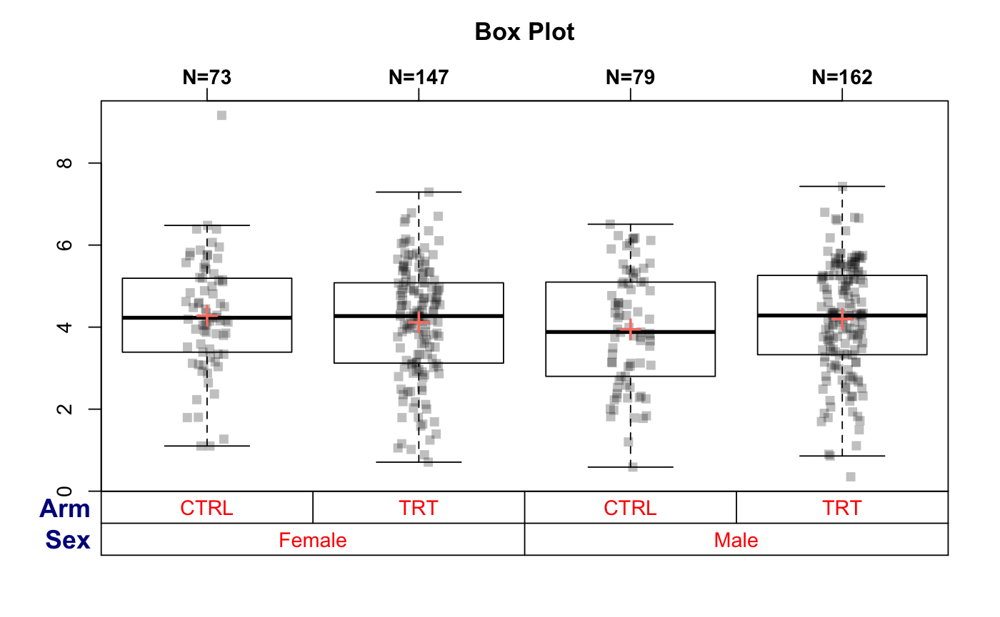## use more crossed factors BoxPlot(inp, KRAS.exprs~Arm:Sex:Country, transf=log, XaxisTab=list(), mar=c(5,3,5,1))#>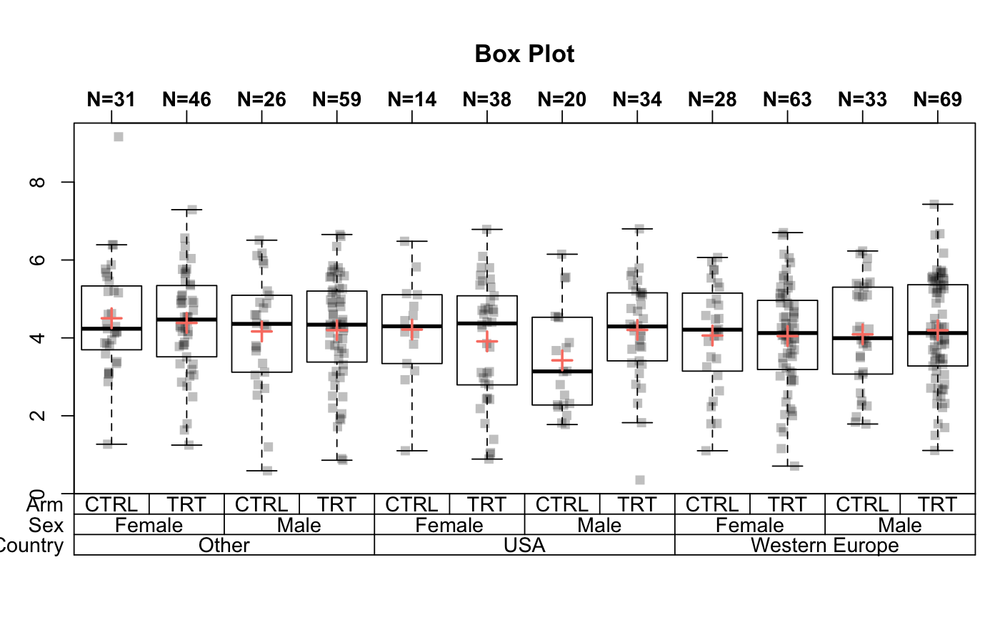## some fency options BoxPlot(inp, KRAS.exprs~Arm %in% Sex, transf = log, Title=list(main="Kras.exprs per Arm by Sex", col.main="Green", cex.main=1.5), vline=c(2.5, 6.5), vl.lty=2, vl.col="gray", vl.lwd=2, Xaxis=list(labels=NA, at=1:4, tick=TRUE), col=c(rep("blue", 2), rep("red", 2)), Xaxis2=list(tick=FALSE), Yaxis=list(at=seq(0, 8, 1)), Grid=list(x=1:4, y=seq(0, 8, 1)), Xlabel=list(text=paste(rep(c("Ctrl", "Trt"), 2), c(rep("Female", 2), rep("Male", 2))), at=1:4, las=2, adj=1, line=0.75, col=c(rep("blue", 2), rep("red", 2))), mean.col=c(rep("cyan", 2), rep("orange", 2)), Box=FALSE, trend="mean", bmar=c(6, 4, 5, 2))#>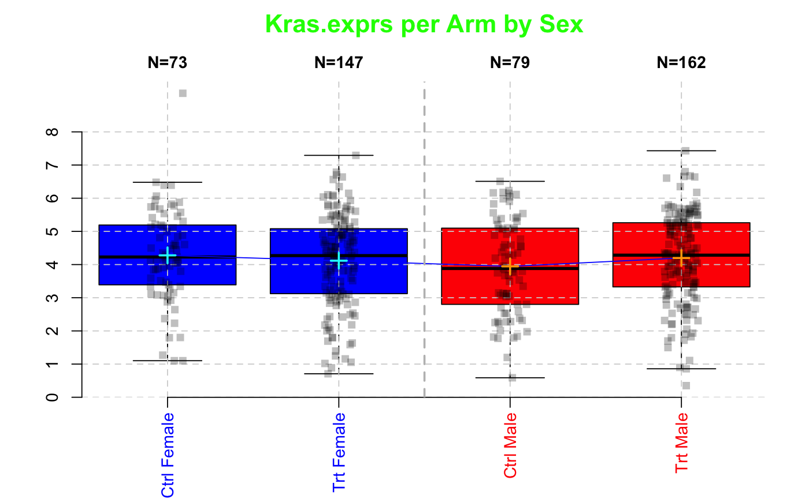## horizontal fency plot BoxPlot(input, KRAS.exprs~Arm %in% Sex, transf = log, Title=list(main="Kras.exprs per Arm by Sex", col.main="#84d52b", cex.main=1.5), vline=c(2.5, 6.5), vl.lty=2, vl.col="gray", vl.lwd=2, Xaxis2=list(tick=FALSE, las=2, hadj=-0.25), Yaxis=list(at=seq(0, 8, 1)), Grid=list(x=1:4, y=seq(0, 8, 1)), mean.col=c(rep("cyan", 2), rep("orange", 2)), Box=FALSE, trend="mean", mar=c(3, 7, 4, 4), horizontal=TRUE, sc.pch=c(0,15)[input$OS.event+1], sc.col="wheat4", XaxisTab=list(Text=list(col=c(rep("cyan", 2), rep("orange", 2)))))#>legend(x="topright", pch=c(0, 15), legend=c("event", "no event"), box.lty=0, col="wheat4")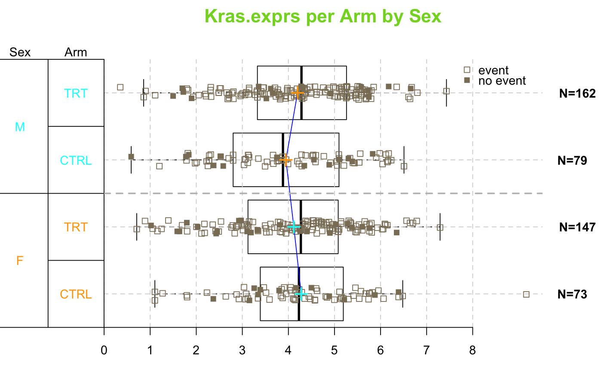